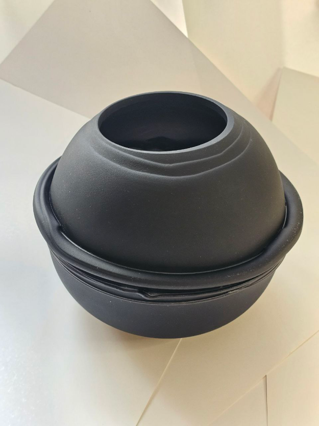
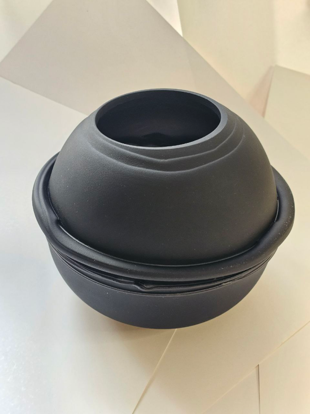
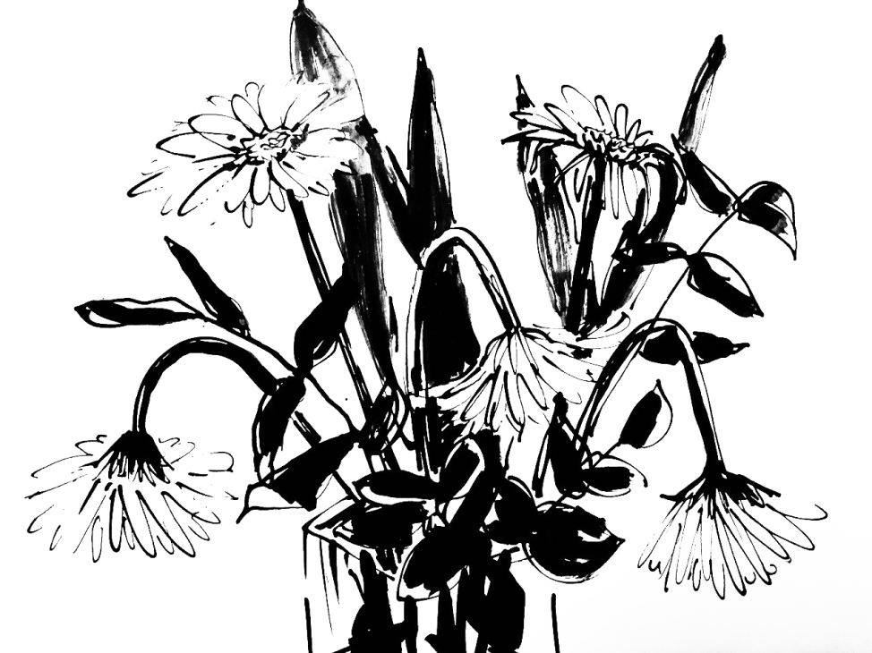
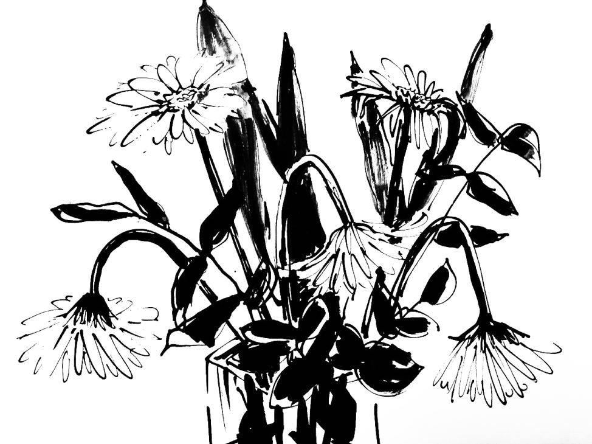

Для каждого проекта мы создаем уникальные индивидуальные арт объекты, предметы декора, мебели, светильники. Это неотъемлемая часть нашего рабочего творческого процесса. Зачастую это выходит за рамки проекта и становится самостоятельным явлением.
STUDIO

Unique Art Objects for Every Project
Коллекция авторского стекла GLASS NOIR
Крупные, до 60см высотой, вазы из черного матового стекла. Большой размер, скульптурная форма и текстура черного матового стекла делает их не только декоративными предметами, но и самодостаточными арт-объектами.


 



Серия графических работ "ЦВЕТЫ"
Черная тушь, бумага, печать. Авторская техника. Форматы от 0.8 до 1,2 м.
Серия изначально создавалась как декоративный акцент в интерьере, где
пятно, силуэт, линии задают экспрессивное графичное настроение.
 
